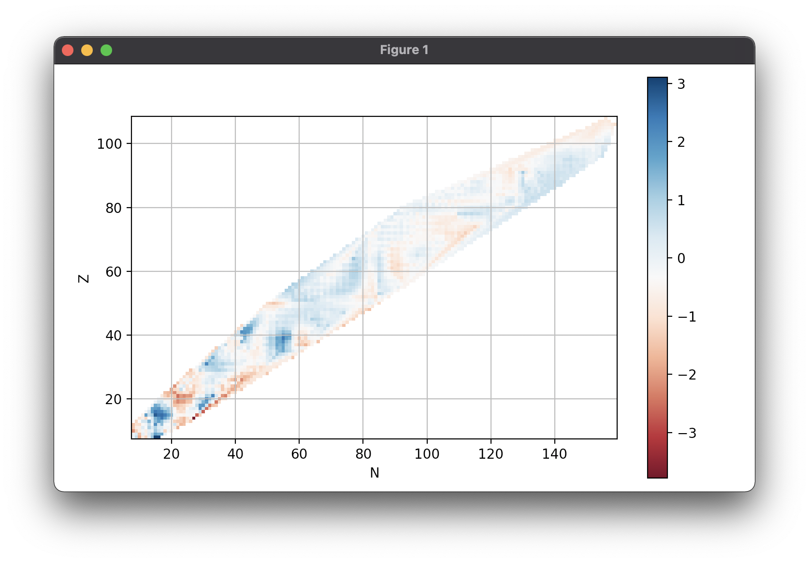

masstable¶
Utilities for working with nuclear mass tables
Install¶
pip install masstable
Create a table¶
>>> from masstable import Table
>>> ame = Table('AME2003')
Supported tables¶
To access the list of supported tables:
>>> Table.names
['AME2003',
'AME2003all',
'AME2012',
'AME2012all',
'AME1995',
'AME1995all',
'DUZU',
'FRDM95',
'KTUY05',
'ETFSI12',
'HFB14',
'HFB26',
'TCSM12',
'BR2013',
'MAJA88',
'GK88',
'WS32010',
'WS32011',
'SVM13']
Inspecting tables¶
To view the beginning or the end sample of Table object, use the head and
tail methods. The default number of elements to display is five, but you
may pass a custom number same as in pandas:
>>> ame.head()
Z N
0 1 8.071317
1 0 7.288970
1 13.135722
2 14.949806
2 1 14.931215
Name: AME2003, dtype: float64
>>> ame.tail(3)
Z N
104 157 101.315395
108 156 119.599066
106 159 112.817611
Name: AME2003, dtype: float64
Indexing, accessing elements¶
Table objects support fancy indexing. For example to list all lead(Z=82) isotopes:
>>> ame[82,:]
AME2003
Z N
82 96 3.567800
98 -1.939209
99 -3.144762
100 -6.826135
101 -7.568734
102 -11.045339
...
>>> ame[82,126:128]
AME2003
Z N
82 126 -21.748455
127 -17.614440
128 -14.728292
To access a simple element just do:
>>> ame[82,126]
AME2003
Z N
82 126 -21.748455
>>> Table('AME1995')[82,126]
AME1995
Z N
82 126 -21.763563
You can also pass a list. To return the binding energies at magic nuclei:
>>> magic_nuclei = [(20,28), (50,50), (50,82), (82,126)]
>>> Table('AME2012').binding_energy[magic_nuclei]
Z N
20 28 416.014215
50 50 825.325172
82 1102.876416
82 126 1636.486450
Name: AME2012, dtype: float64
For more complicated relations the select method can be used. For example to select all nuclei with A > 160 we can do:
>>> A_gt_160 = lambda Z,N: Z + N > 160
>>> Table('AME2003').select(A_gt_160)
Convenience methods¶
Calculate the root mean squared error of Möller, et al. Atomic Data and Nuclear Data Tables, 59 (1995), 185-351:
>>> Table('FRDM95').rmse(relative_to='AME2003')
0.890859326191
>>> Table('FRDM95')[8:,8:].rmse()
0.6555037788616391
Find the first odd-odd nuclei of Möller's mass table:
>>> Table('FRDM95').odd_odd
Z N
9 9 1.21
11 0.10
13 3.08
15 9.32
...
You can access the whole list of Z, N or A in a Table object via ame.Z, ame.A, etc.
Separation energies¶
The following derived quantities are available:
q_alpha: Q-value of beta decayq_beta: Q-value of beta decays2n,s1n: Neutron separation energiess2p,s1p: Proton separation energies
For example:
>>> duzu = Table('DUZU')
>>> duzu.s2n.tail()
Z N
119 179 13.412634
120 178 14.282634
121 177 15.222634
122 176 16.122634
123 175 NaN
Name: s2n(DUZU), dtype: float64
Plotting¶
import matplotlib.pyplot as plt
fig, ax = plt.subplots()
ax = Table('FRDM95').error().chart_plot(ax=ax)
plt.show()
